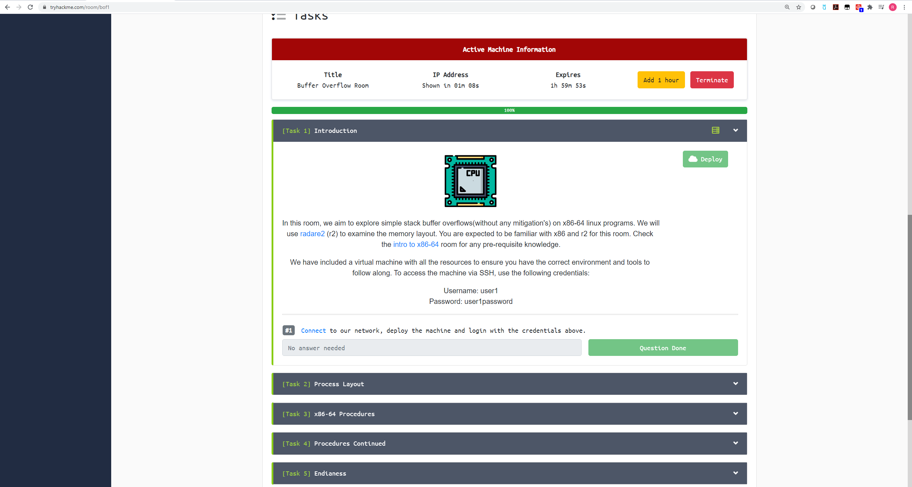
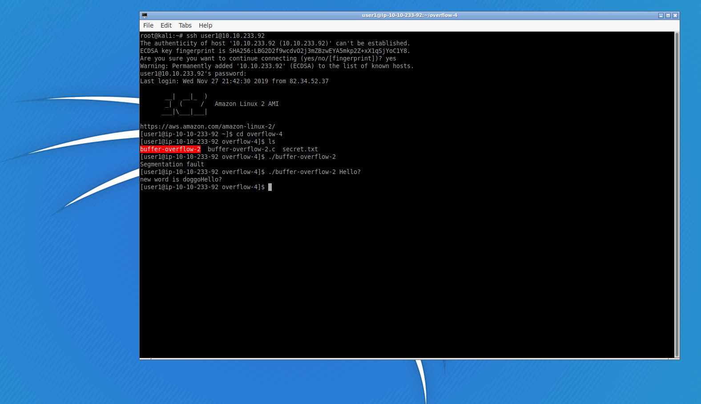

I want to mention that I am by no means an expert, and even in the process of this write-up I ran into an issue that I could only take a guess as to why the error happened. We'll get into that later. For now, I'll assume you have no knowledge of assembly and no knowledge of memory management (where programs store things during execution). A slight understanding of both is needed to understand the steps taken here, and if you really want to get the full benefit of this write-up and exercise, I recommend you read up on both.

To help us learn Buffer Overflows, we'll do TryHackMe's subscription buffer overflow room. I won't take you through the whole thing because I really like them and their product, so I would rather you subscribe to them and learn the same way I am. However, for the purpose of demoing Buffer Overflows, we'll stick to the last task of the room.

We'll log in via ssh with the credential they gave us above. The program we are going to concern ourselves with is named "buffer-overflow-2" inside of the overflow-4 directory.
Every time you start trying to pentest anything, a good habit is to take the "happy path", which means to try to use the application/program normally. In the screenshot above, you can see that I try to run the program without any arguments. We get a segmentation fault, so that probably means we should provide some arguments to it.
Although for this example I could have examined the source code of the program, I wanted to go through it as if it was a real scenario, and we didn't have access to that. Once the program was supplied with an argument, we can see it returns doggo appended to whatever input you supply it.
Nice! That means the program accepts string input, and we should test it for a buffer overflow vulnerability.